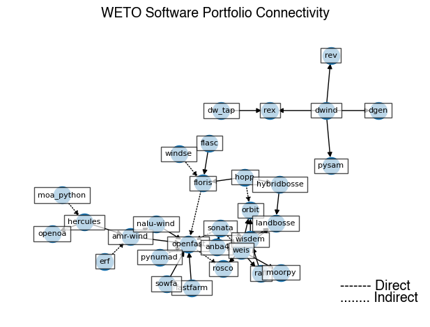
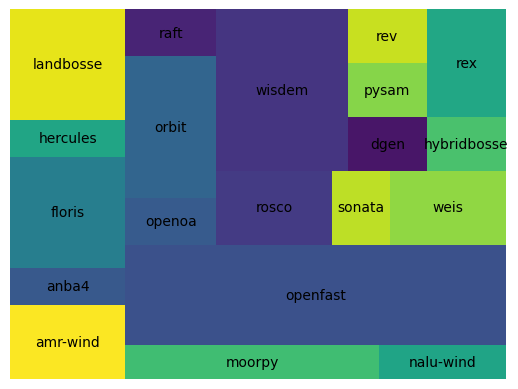

Depedencies#
By collecting data on the projects within the WETO portfolio that use other tools within the portfolio, we can get a sense for the software projects that are at the “core” of the capabilities.
This network is divided into two types of connectivity:
Direct connections are software that are connected within the code, so they may communicate directly through API’s, share memory, and be distributed as a bundle.
Indirect connections are software that require the outputs of other tools in order to construct their inputs. These are connected through workflows rather than code.
Show code cell content
from pathlib import Path
import yaml
import networkx as nx
software_attr_dir = Path("..", "..", "software_attributes")
software_database_dir = software_attr_dir / "database"
model_list_inputs = yaml.safe_load( open(software_attr_dir / "database_list.yaml", "r") )
models = model_list_inputs["active"] + model_list_inputs["partial"]
model_attributes_map = {
model: yaml.safe_load( open( software_database_dir / f"{model}.yaml", "r") )
for model in models
}
---------------------------------------------------------------------------
ModuleNotFoundError Traceback (most recent call last)
Cell In[1], line 3
1 from pathlib import Path
2 import yaml
----> 3 import networkx as nx
5 software_attr_dir = Path("..", "..", "software_attributes")
6 software_database_dir = software_attr_dir / "database"
ModuleNotFoundError: No module named 'networkx'
Show code cell content
model_connectivity = {}
for model in models:
model_attributes = model_attributes_map[model]
if "dependencies" not in model_attributes:
continue
model_connectivity[model] = model_attributes["dependencies"]
network_graph = nx.DiGraph()
for model, connections in model_connectivity.items():
for c in connections:
weight = 1 if c[1] == "direct" else 2
network_graph.add_edge(model, c[0], weight=weight)
Show code cell source
import matplotlib.pyplot as plt
edges_direct = [(u, v) for (u, v, d) in network_graph.edges(data=True) if d["weight"] == 1]
edges_indirect = [(u, v) for (u, v, d) in network_graph.edges(data=True) if d["weight"] == 2]
# layout = nx.nx_pydot.graphviz_layout(network_graph, prog="neato")
layout = nx.nx_agraph.graphviz_layout(
network_graph,
prog="sfdp",
# args="-Gnormalize=true"
# args="-GK=0.5"
)
# layout = nx.spring_layout(network_graph, k=2)
# nodes
nx.draw_networkx_nodes(
network_graph,
layout,
# node_size=1000
)
# edges
nx.draw_networkx_edges(
network_graph,
layout,
edgelist=edges_direct,
width=1,
# edge_color="b"
)
nx.draw_networkx_edges(
network_graph,
layout,
edgelist=edges_indirect,
width=1,
# alpha=0.5,
# edge_color="b",
style=":"
# edge_color="r"
)
# node labels
label_options = {"ec": "k", "fc": "white", "alpha": 0.7}
nx.draw_networkx_labels(
network_graph,
layout,
font_size=8,
bbox=label_options,
# font_family="sans-serif"
)
# edge weight labels
# edge_labels = nx.get_edge_attributes(network_graph, "weight")
# nx.draw_networkx_edge_labels(network_graph, layout, edge_labels)
# Title/legend
ax = plt.gca()
font = {"fontname": "Helvetica", "color": "k", "fontweight": "bold", "fontsize": 14}
ax.set_title("WETO Software Portfolio Connectivity", font)
# Change font color for legend
font["color"] = "k"
ax.text(
0.80,
0.10,
"------- Direct",
horizontalalignment="left",
transform=ax.transAxes,
fontdict=font,
)
ax.text(
0.80,
0.06,
"........ Indirect",
horizontalalignment="left",
transform=ax.transAxes,
fontdict=font,
)
ax = plt.gca()
ax.margins(0.08)
plt.axis("off")
plt.tight_layout()
plt.show()

Show code cell source
import squarify
# Count the number of projects depending on each project
depending = {model: 0 for model in models}
for model, dependents in model_connectivity.items():
for d in dependents:
depending[d[0]] = depending[d[0]] + 1
non_zero = {k:v for k,v in depending.items() if v > 0}
squarify.plot(list(non_zero.values()), label=list(non_zero.keys()))
plt.axis("off")
(0.0, 100.0, 0.0, 100.0)
